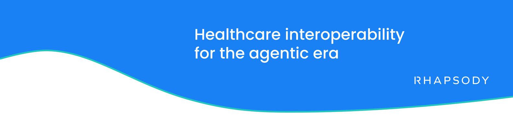
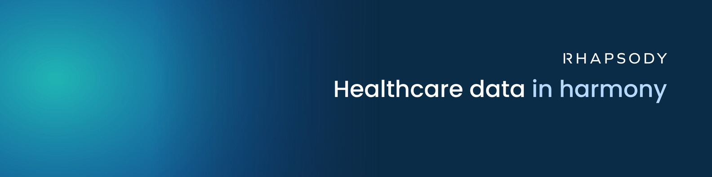
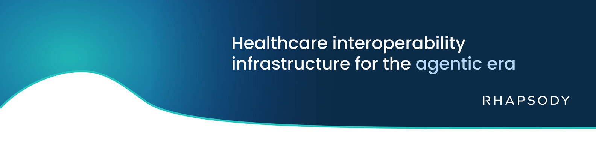
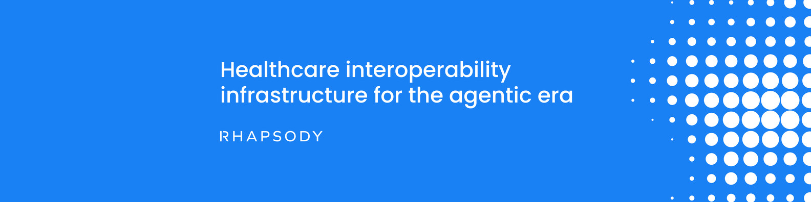

Every Rhapsody employee can use one of four approved banners as their LinkedIn cover image. They’re in the Brand Package FY27 folder on SharePoint, open to everyone at Rhapsody: Social Media Cover Images.




These banners are approved as they are. Don’t use them as a model for new designs: new work follows the rest of this system. In particular, the wave cut-out is approved for these LinkedIn banners only; it isn’t a device in the Rhapsody system, so never use it anywhere else.